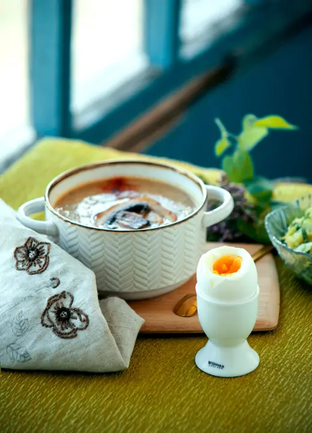

Kitchen Gadget Gifts UK: Useful Presents for Home Cooks
Ad: As an Amazon Associate I earn from qualifying purchases. Links on this page are affiliate links, so I may earn a commission if you buy, at no extra cost to you. More info.
For people who love cooking, hosting Christmas dinner, or just want to make weeknight meals a bit easier.
Lifestyle photo (not the product): Pexels
1. TempPro instant-read meat thermometer
An instant-read thermometer takes the guesswork out of the Christmas turkey and Sunday roasts. Probably the most useful kitchen gift under the tree.
View on Amazon UKLifestyle photo (not the product): Pexels
2. Ninja Express Chop mini chopper
Ninja’s mini chopper blitzes herbs, onions and garlic in seconds. Great for anyone who hates chopping by hand.
View on Amazon UKLifestyle photo (not the product): Pexels
3. Silicone air fryer liners
Reusable silicone liners keep air fryer baskets clean. An ideal add-on gift for the air fryer obsessive.
View on Amazon UKLifestyle photo (not the product): Pexels
4. Fullstar veg chopper and slicer
A chopper and mandoline in one for quick, even veg prep. Suits batch-cookers and meal-preppers.
View on Amazon UKLifestyle photo (not the product): Pexels
5. Olive oil sprayer and dispenser
An oil sprayer gives a light, even coating, which is perfect for air frying and salads. A smart gift for health-conscious cooks.
View on Amazon UK
Lifestyle photo (not the product): Pexels
6. Salter electric egg cooker
Perfect boiled or poached eggs without watching the pan. Lovely for students and busy households.
View on Amazon UK7. Contigo Byron leakproof travel mug
A leakproof travel mug that keeps coffee hot for hours. Great for commuters and early starters.
View on Amazon UK
Lifestyle photo (not the product): Pexels
8. YETI Rambler 10oz tumbler
A YETI tumbler keeps drinks hot or cold for ages and is built to last. A premium-feeling gift for coffee lovers.
View on Amazon UK